02_data
Bruce Wang
10/10/2019
Group Statistics
df6 %>% group_by(BinStartTime) %>% tally()## # A tibble: 384 x 2
## BinStartTime n
## <dttm> <int>
## 1 2018-03-06 07:00:00 20
## 2 2018-03-06 07:15:00 20
## 3 2018-03-06 07:30:00 20
## 4 2018-03-06 07:45:00 20
## 5 2018-03-06 08:00:00 20
## 6 2018-03-06 08:15:00 20
## 7 2018-03-06 08:30:00 20
## 8 2018-03-06 08:45:00 20
## 9 2018-03-06 12:00:00 20
## 10 2018-03-06 12:15:00 20
## # ... with 374 more rowsdf6 %>% group_by(SignalID) %>% tally()## # A tibble: 10 x 2
## SignalID n
## <dbl> <int>
## 1 4024 768
## 2 4029 768
## 3 4090 768
## 4 4165 768
## 5 4301 768
## 6 4388 768
## 7 4704 768
## 8 4705 768
## 9 4706 768
## 10 7207 768df6 %>% group_by(ApproachId) %>% tally()## # A tibble: 20 x 2
## ApproachId n
## <dbl> <int>
## 1 335 384
## 2 338 384
## 3 398 384
## 4 3169 384
## 5 3172 384
## 6 5837 384
## 7 5838 384
## 8 5850 384
## 9 5851 384
## 10 5879 384
## 11 5883 384
## 12 6005 384
## 13 6007 384
## 14 6025 384
## 15 6042 384
## 16 6043 384
## 17 6099 384
## 18 6101 384
## 19 6561 384
## 20 6565 384df6 %>% group_by(ArrivalsOnGreen) %>% tally()## # A tibble: 414 x 2
## ArrivalsOnGreen n
## <dbl> <int>
## 1 0 450
## 2 1 4
## 3 2 2
## 4 3 8
## 5 4 11
## 6 5 21
## 7 6 22
## 8 7 22
## 9 8 38
## 10 9 27
## # ... with 404 more rowsdf6 %>% group_by(ArrivalsOnRed) %>% tally()## # A tibble: 281 x 2
## ArrivalsOnRed n
## <dbl> <int>
## 1 0 529
## 2 1 89
## 3 2 111
## 4 3 125
## 5 4 105
## 6 5 92
## 7 6 94
## 8 7 90
## 9 8 114
## 10 9 111
## # ... with 271 more rowsdf6 %>% group_by(ArrivalsOnYellow) %>% tally()## # A tibble: 52 x 2
## ArrivalsOnYellow n
## <dbl> <int>
## 1 0 950
## 2 1 680
## 3 2 717
## 4 3 734
## 5 4 678
## 6 5 663
## 7 6 564
## 8 7 496
## 9 8 414
## 10 9 325
## # ... with 42 more rowsdf6 %>% group_by(TotalVolume) %>% tally()## # A tibble: 544 x 2
## TotalVolume n
## <dbl> <int>
## 1 0 448
## 2 1 1
## 3 2 4
## 4 3 2
## 5 4 6
## 6 5 9
## 7 6 6
## 8 7 13
## 9 8 12
## 10 9 7
## # ... with 534 more rowsdf6 %>% group_by(PlatoonRatio) %>% tally()## # A tibble: 253 x 2
## PlatoonRatio n
## <dbl> <int>
## 1 0 450
## 2 0.05 1
## 3 0.1 1
## 4 0.11 3
## 5 0.14 1
## 6 0.15 3
## 7 0.16 1
## 8 0.17 1
## 9 0.18 5
## 10 0.19 3
## # ... with 243 more rowsdf6 %>% group_by(PercentGreen) %>% tally()## # A tibble: 92 x 2
## PercentGreen n
## <dbl> <int>
## 1 0 8
## 2 10 2
## 3 11 3
## 4 12 12
## 5 13 18
## 6 14 41
## 7 15 97
## 8 16 84
## 9 17 84
## 10 18 82
## # ... with 82 more rowsdf6 %>% group_by(TotalTime) %>% tally()## # A tibble: 1,189 x 2
## TotalTime n
## <dbl> <int>
## 1 0 8
## 2 80 2
## 3 159. 2
## 4 259. 2
## 5 318. 2
## 6 320 2
## 7 338. 2
## 8 360 2
## 9 372 2
## 10 400 4
## # ... with 1,179 more rowsdf6 %>% group_by(TotalGreenTime) %>% tally()## # A tibble: 4,070 x 2
## TotalGreenTime n
## <dbl> <int>
## 1 0 8
## 2 61.9 2
## 3 77 1
## 4 78.7 1
## 5 81.1 1
## 6 84.7 1
## 7 85.7 1
## 8 86.3 1
## 9 86.9 1
## 10 87.9 1
## # ... with 4,060 more rowsdf6 %>% group_by(TotalYellowTime) %>% tally()## # A tibble: 160 x 2
## TotalYellowTime n
## <dbl> <int>
## 1 0 8
## 2 4.4 1
## 3 4.5 10
## 4 4.6 1
## 5 8.6 2
## 6 9 28
## 7 9.4 2
## 8 12.9 4
## 9 13.2 4
## 10 13.5 56
## # ... with 150 more rowsdf6 %>% group_by(TotalRedTime) %>% tally()## # A tibble: 4,089 x 2
## TotalRedTime n
## <dbl> <int>
## 1 0 8
## 2 12 1
## 3 12.6 2
## 4 12.8 4
## 5 13.6 2
## 6 13.7 2
## 7 23.4 1
## 8 24.2 1
## 9 25.9 3
## 10 26.4 2
## # ... with 4,079 more rowsdf6 %>% group_by(SplitFailures) %>% tally()## # A tibble: 13 x 2
## SplitFailures n
## <dbl> <int>
## 1 0 5006
## 2 1 845
## 3 2 412
## 4 3 254
## 5 4 127
## 6 5 95
## 7 6 51
## 8 7 58
## 9 8 42
## 10 9 14
## 11 10 4
## 12 11 4
## 13 NA 768df6 %>% group_by(PhaseNumber) %>% tally()## # A tibble: 3 x 2
## PhaseNumber n
## <dbl> <int>
## 1 2 3839
## 2 6 3838
## 3 NA 3df6 %>% group_by(GapOuts) %>% tally()## # A tibble: 34 x 2
## GapOuts n
## <dbl> <int>
## 1 0 5671
## 2 1 204
## 3 2 399
## 4 3 308
## 5 4 328
## 6 5 191
## 7 6 213
## 8 7 121
## 9 8 102
## 10 9 9
## # ... with 24 more rowsdf6 %>% group_by(ForceOffs) %>% tally()## # A tibble: 28 x 2
## ForceOffs n
## <dbl> <int>
## 1 0 224
## 2 1 123
## 3 2 159
## 4 3 231
## 5 4 367
## 6 5 392
## 7 6 443
## 8 7 675
## 9 8 977
## 10 9 430
## # ... with 18 more rowsdf6 %>% group_by(MaxOuts) %>% tally()## # A tibble: 5 x 2
## MaxOuts n
## <dbl> <int>
## 1 0 7670
## 2 1 2
## 3 2 4
## 4 3 1
## 5 NA 3df6 %>% group_by(SevereRedLightViolations) %>% tally()## # A tibble: 12 x 2
## SevereRedLightViolations n
## <dbl> <int>
## 1 0 6364
## 2 1 105
## 3 2 43
## 4 3 2
## 5 4 6
## 6 6 1
## 7 10 1
## 8 20 2
## 9 27 1
## 10 28 2
## 11 30 1
## 12 NA 1152df6 %>% group_by(TotalRedLightViolations) %>% tally()## # A tibble: 15 x 2
## TotalRedLightViolations n
## <dbl> <int>
## 1 0 5489
## 2 1 701
## 3 2 208
## 4 3 68
## 5 4 32
## 6 5 15
## 7 6 4
## 8 7 3
## 9 8 1
## 10 10 1
## 11 20 2
## 12 27 1
## 13 28 1
## 14 30 2
## 15 NA 1152df6 %>% group_by(TotalCycles) %>% tally()## # A tibble: 19 x 2
## TotalCycles n
## <dbl> <int>
## 1 0 3
## 2 1 11
## 3 2 32
## 4 3 66
## 5 4 110
## 6 5 166
## 7 6 184
## 8 7 1003
## 9 8 2200
## 10 9 884
## 11 10 427
## 12 11 1154
## 13 12 923
## 14 13 468
## 15 14 17
## 16 15 4
## 17 16 9
## 18 17 15
## 19 18 4df6 %>% group_by(VCRatio) %>% tally()## # A tibble: 7,184 x 2
## VCRatio n
## <dbl> <int>
## 1 0 440
## 2 0.000192 1
## 3 0.000235 1
## 4 0.000236 1
## 5 0.000236 1
## 6 0.000280 1
## 7 0.000295 1
## 8 0.000310 1
## 9 0.000311 1
## 10 0.000325 1
## # ... with 7,174 more rowsTotalVolume <- table(df6$TotalVolume)
SplitFailures <- table(df6$SplitFailures)
ArrivalsOnGreen <- table(df6$ArrivalsOnGreen)
ArrivalsOnRed <- table(df6$ArrivalsOnRed)
PlatoonRatio <- table(df6$PlatoonRatio)
ForceOffs <- table(df6$ForceOffs)
Gapouts <- table(df6$GapOuts)
VCRatio <- table(df6$VCRatio)
TotalRedLightViolations <- table(df6$TotalRedLightViolations)Histogram Plots
Plots
Forceoffs
ggplot(df6, aes(x = ForceOffs)) + geom_histogram(color = "black", fill = "Blue") ## `stat_bin()` using `bins = 30`. Pick better value with `binwidth`.## Warning: Removed 3 rows containing non-finite values (stat_bin).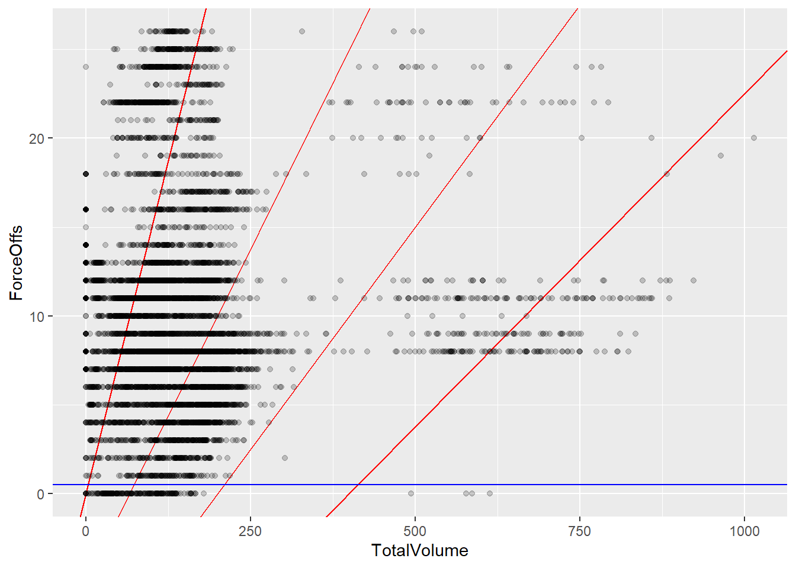
ggplot(df6, aes(x = ForceOffs, fill = SignalID)) + geom_bar(color = "black", fill = "Blue") + facet_wrap(~SignalID)## Warning: Removed 3 rows containing non-finite values (stat_count).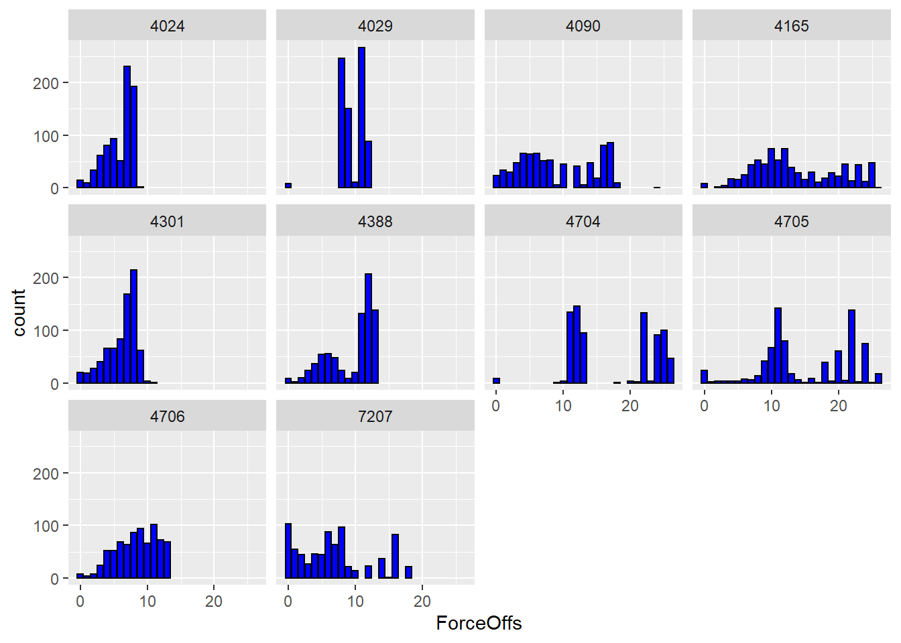
# ggplot(df5, aes(x = ForceOffs)) + geom_histogram(aes(y = ..density..), color = "black", fill = "Blue") + geom_density(alpha = 0.2, fill = "#F60404")Gapouts
ggplot(df6, aes(x = GapOuts)) + geom_histogram(color = "black", fill = "Blue") + scale_x_continuous(limits = c(-1, 20))## `stat_bin()` using `bins = 30`. Pick better value with `binwidth`.## Warning: Removed 26 rows containing non-finite values (stat_bin).## Warning: Removed 2 rows containing missing values (geom_bar).
ggplot(df6, aes(x = GapOuts)) + geom_histogram(color = "black", fill = "Blue") + scale_x_continuous(limits = c(0, 20)) + scale_y_continuous(limits = c(0, 500))## `stat_bin()` using `bins = 30`. Pick better value with `binwidth`.## Warning: Removed 26 rows containing non-finite values (stat_bin).
## Warning: Removed 2 rows containing missing values (geom_bar).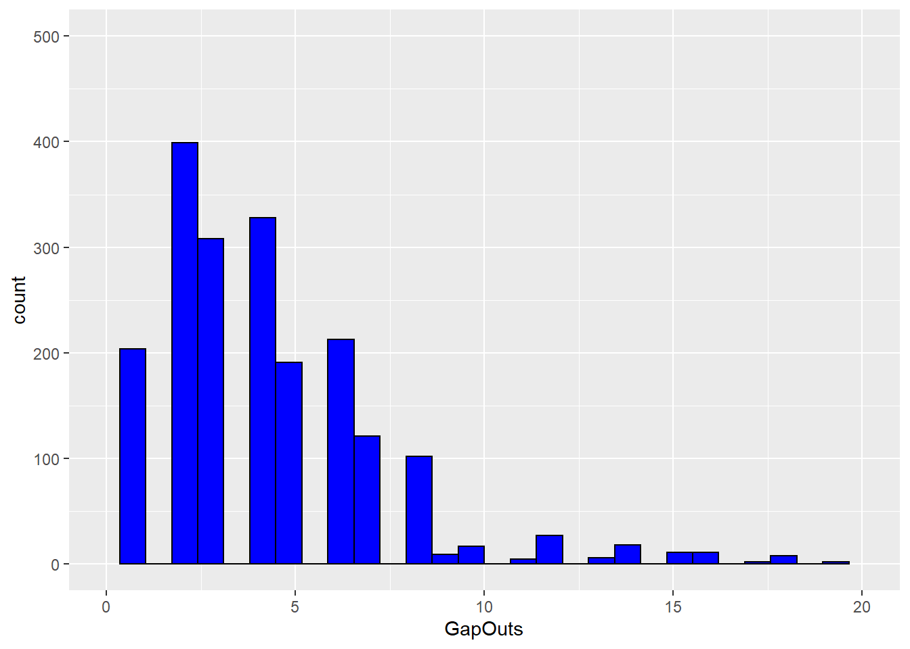
ArrivalsOnGreen
ggplot(df6, aes(x = ArrivalsOnGreen)) + geom_histogram(color = "black", fill = "Green") ## `stat_bin()` using `bins = 30`. Pick better value with `binwidth`.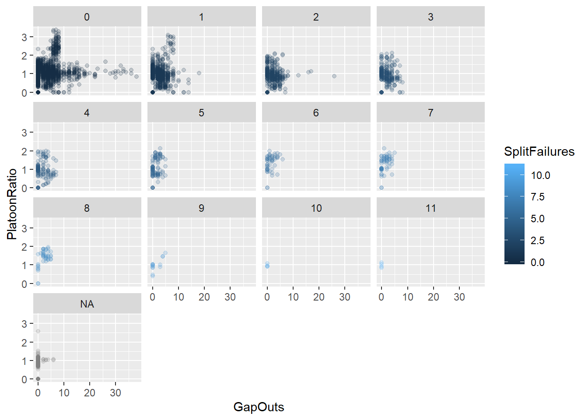
ggplot(df6, aes(x = ArrivalsOnGreen, fill = SignalID)) + geom_bar(color = "Green", fill = "Green") + facet_wrap(~SignalID) + scale_x_continuous(limits = c(0, 200)) + scale_y_continuous(limits = c(0, 50))## Warning: Removed 356 rows containing non-finite values (stat_count).## Warning: Removed 7 rows containing missing values (geom_bar).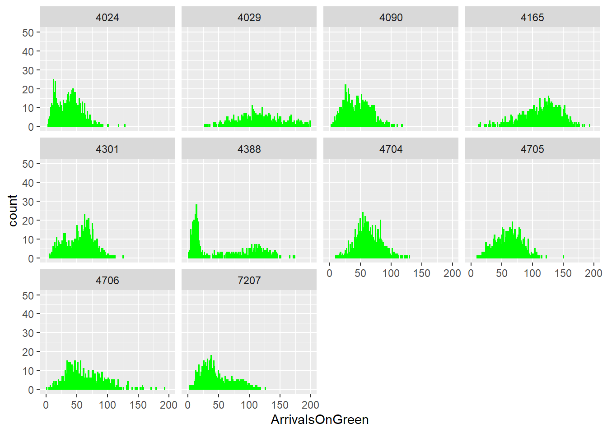
ArrivalsOnRed
ggplot(df6, aes(x = ArrivalsOnRed)) + geom_histogram(color = "black", fill = "Red")## `stat_bin()` using `bins = 30`. Pick better value with `binwidth`.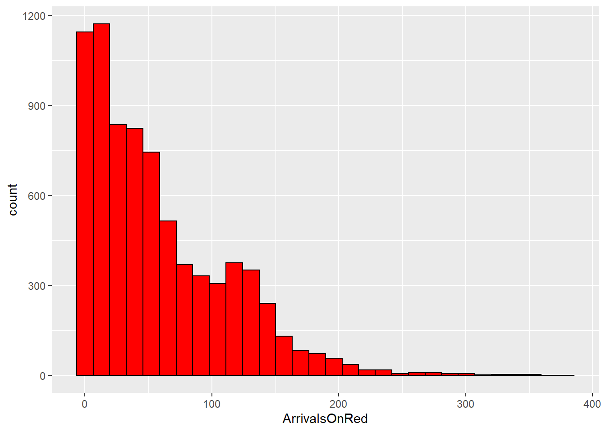
ggplot(df6, aes(x = ArrivalsOnRed, fill = SignalID)) + geom_bar(color = "Red", fill = "Red") + facet_wrap(~SignalID) + scale_x_continuous(limits = c(0, 100)) + scale_y_continuous(limits = c(0, 400))## Warning: Removed 1709 rows containing non-finite values (stat_count).## Warning: Removed 12 rows containing missing values (geom_bar).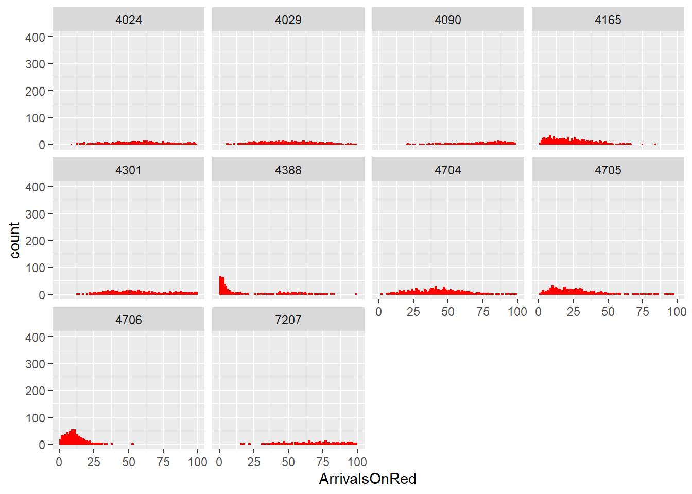
PlatoonRatio
ggplot(df6, aes(x = PlatoonRatio)) + geom_histogram(color = "black", fill = "Blue")## `stat_bin()` using `bins = 30`. Pick better value with `binwidth`.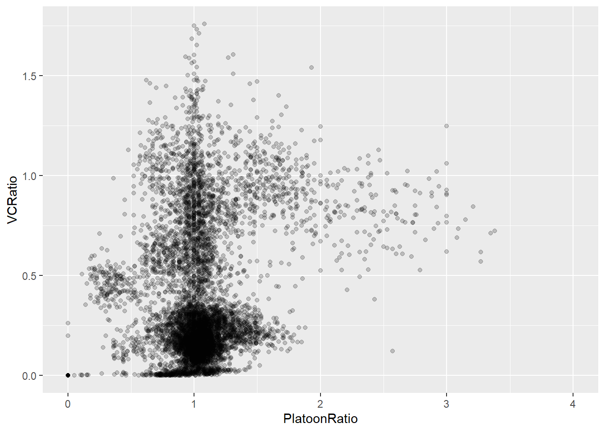
ggplot(df6, aes(x = PlatoonRatio, fill = SignalID)) + geom_bar(color = "black", fill = "Blue") + facet_wrap(~SignalID)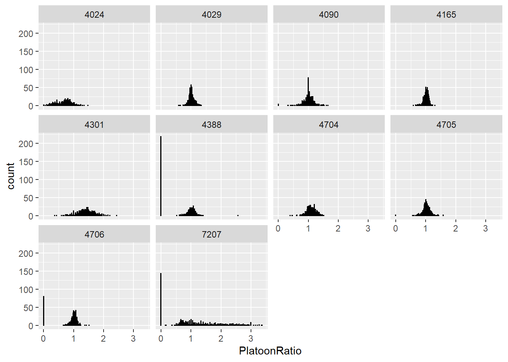
SplitFailures
ggplot(df6, aes(x = SplitFailures)) + geom_histogram(color = "black", fill = "Blue")## `stat_bin()` using `bins = 30`. Pick better value with `binwidth`.## Warning: Removed 768 rows containing non-finite values (stat_bin).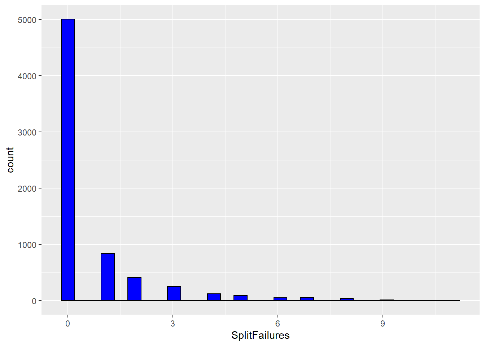
ggplot(df6, aes(x = SplitFailures, fill = SignalID)) + geom_bar(color = "black", fill = "Blue") + facet_wrap(~SignalID)## Warning: Removed 768 rows containing non-finite values (stat_count).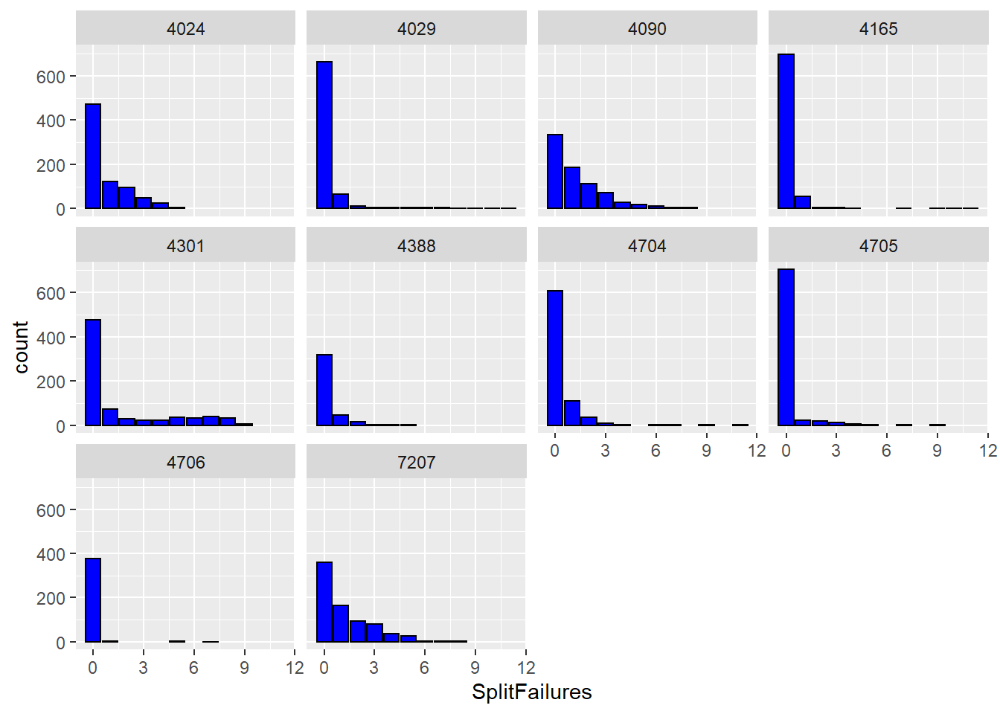
TotalRedLightViolations
ggplot(df6, aes(x = TotalRedLightViolations)) + geom_histogram(color = "black", fill = "red")## `stat_bin()` using `bins = 30`. Pick better value with `binwidth`.## Warning: Removed 1152 rows containing non-finite values (stat_bin).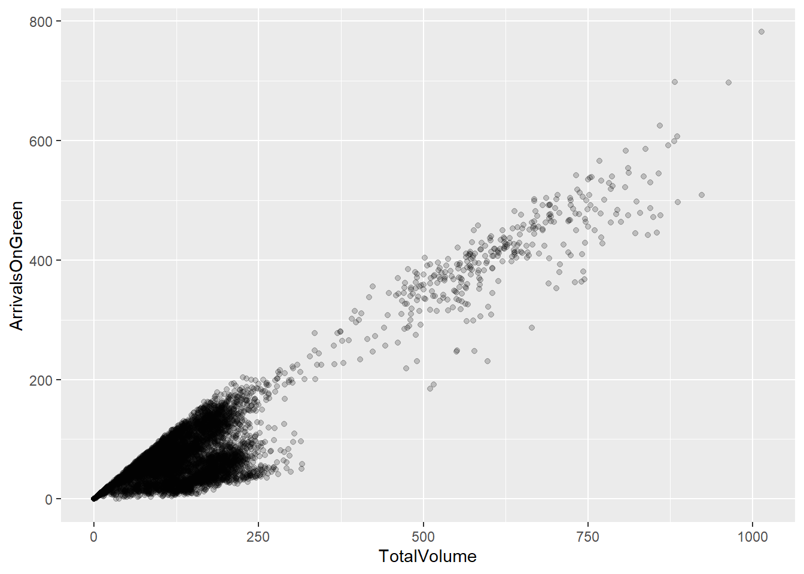
ggplot(df6, aes(x = TotalRedLightViolations, fill = SignalID)) + geom_bar(color = "black", fill = "Red") + facet_wrap(~SignalID) + scale_x_continuous(limits = c(0, 40)) + scale_y_continuous(limits = c(0, 220))## Warning: Removed 1152 rows containing non-finite values (stat_count).## Warning: Removed 10 rows containing missing values (geom_bar).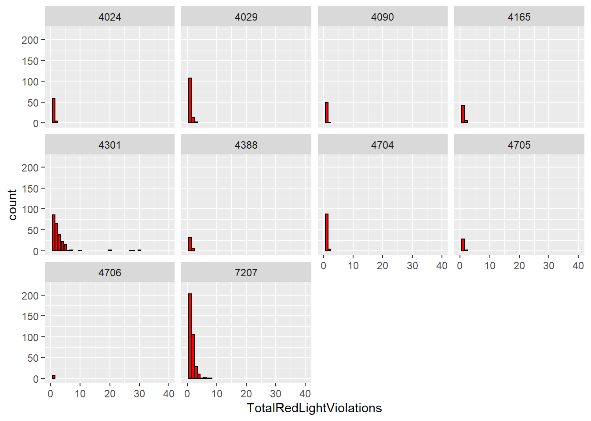
VCRatio
ggplot(df6, aes(x = VCRatio)) + geom_histogram(color = "black", fill = "Blue")## `stat_bin()` using `bins = 30`. Pick better value with `binwidth`.## Warning: Removed 8 rows containing non-finite values (stat_bin).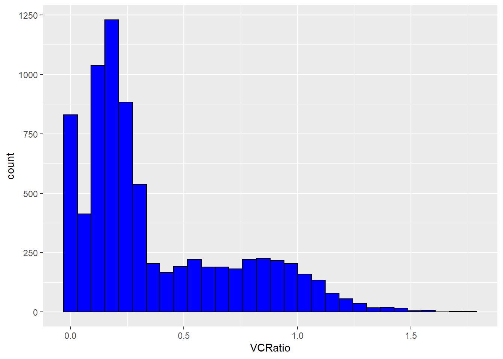
# ggplot(df6, aes(x = VCRatio, fill = SignalID))+ geom_bar(color = "black", fill = "Blue") +
# facet_wrap(~SignalID)x-y plots
Plots
ArrivalsOnGreen VS PlatoonRatio
ggplot(df6, aes(x = ArrivalsOnGreen, y = PlatoonRatio, color = SplitFailures)) +
geom_point(alpha = 0.3) +
# facet_grid(is_protected~splitfails)
facet_wrap(~SplitFailures) +
scale_x_continuous(limits = c(0, 200))## Warning: Removed 356 rows containing missing values (geom_point).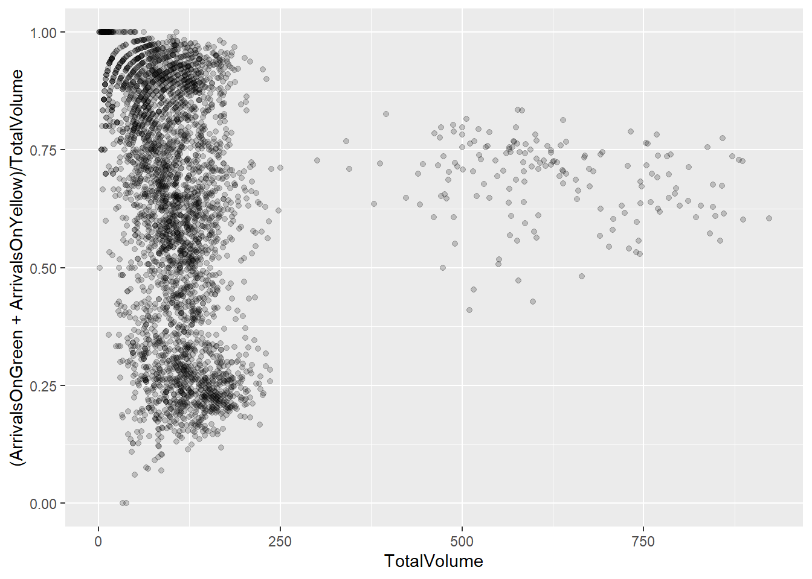
ArrivalsOnRed VS PlatoonRatio
ggplot(df6, aes(x = ArrivalsOnRed, y = PlatoonRatio, color = SplitFailures)) +
geom_point(alpha = 0.3) +
# facet_grid(is_protected~splitfails)
facet_wrap(~SplitFailures) +
scale_x_continuous(limits = c(0, 200))## Warning: Removed 137 rows containing missing values (geom_point).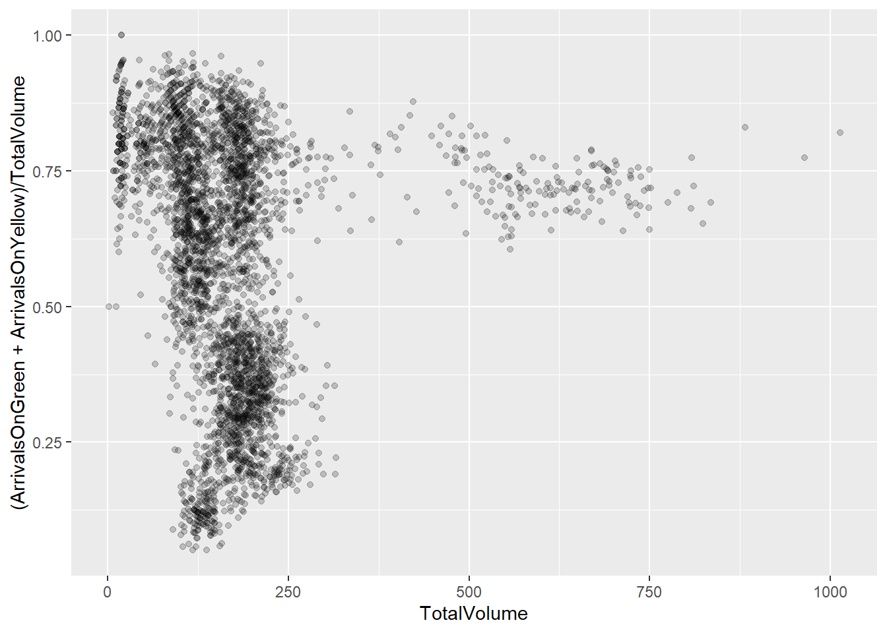
PercentGreen VS PlatoonRatio
ggplot(df6, aes(x = PercentGreen, y = PlatoonRatio, color = SplitFailures)) +
geom_point(alpha = 0.2) + facet_wrap(~SplitFailures) 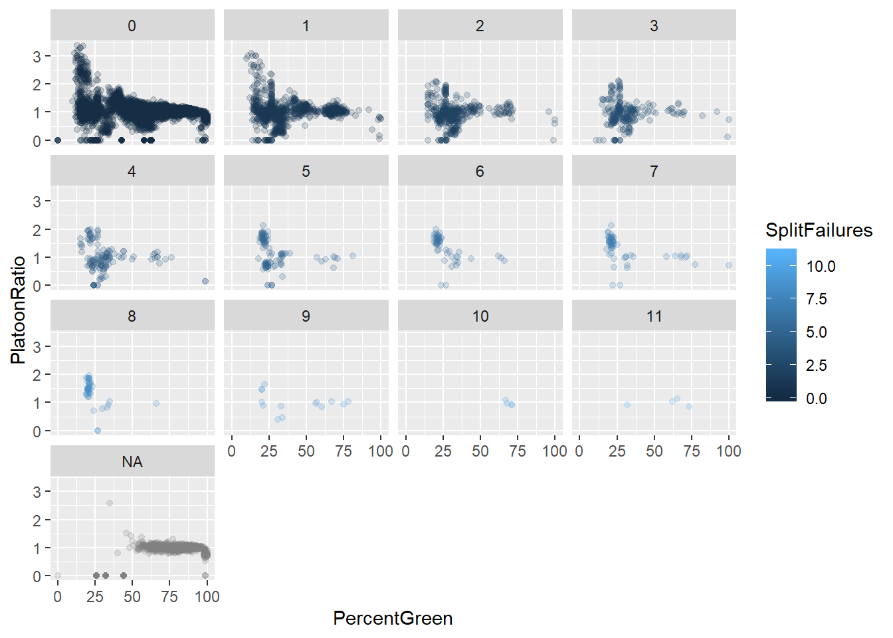
GapOuts VS PlatoonRatio
ggplot(df6, aes(x = GapOuts, y = PlatoonRatio, color = SplitFailures)) +
geom_point(alpha = 0.2) + facet_wrap(~SplitFailures)## Warning: Removed 3 rows containing missing values (geom_point).Forceoffs VS PlatoonRatio
ggplot(df6, aes(x = ForceOffs, y = PlatoonRatio, color = SplitFailures)) +
geom_point(alpha = 0.2) + facet_wrap(~SplitFailures)## Warning: Removed 3 rows containing missing values (geom_point).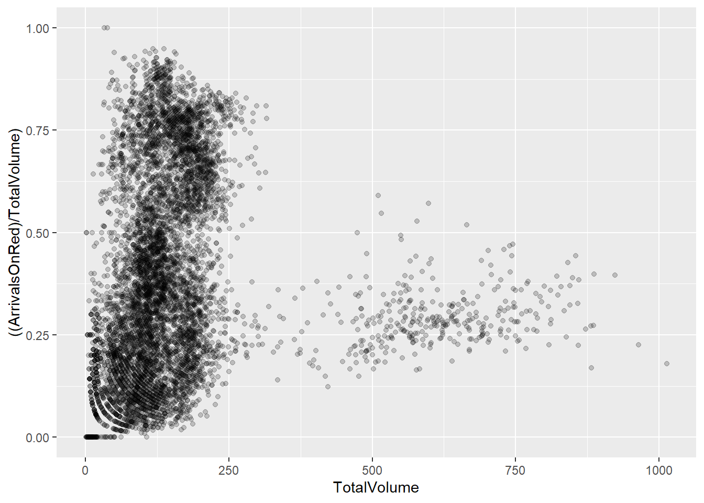
SplitFailures VS PlatoonRatio
ggplot(df6, aes(x = SplitFailures, y = PlatoonRatio)) +
geom_point() ## Warning: Removed 768 rows containing missing values (geom_point).
PlatoonRatio VS VCRatio
ggplot(df6, aes(x = PlatoonRatio, y = VCRatio, SignalID)) +
geom_point(alpha = 0.2) + scale_x_continuous(limits = c(0,4))## Warning: Removed 8 rows containing missing values (geom_point).ggplot(df6, aes(x = PlatoonRatio, y = VCRatio, SignalID)) +
geom_point(alpha = 0.2) + scale_x_continuous(limits = c(0,4)) +
facet_wrap(~SignalID)## Warning: Removed 8 rows containing missing values (geom_point).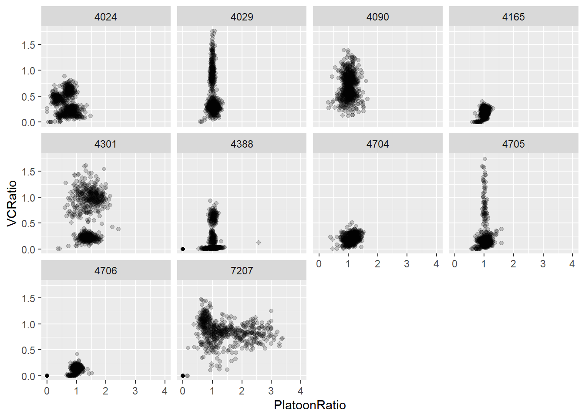
TotalRedLightViolations grouped by ApproachId
ggplot(RA,aes(x = TotalRedLightViolations, fill = ApproachId)) +
geom_bar() +
facet_wrap(~ApproachId)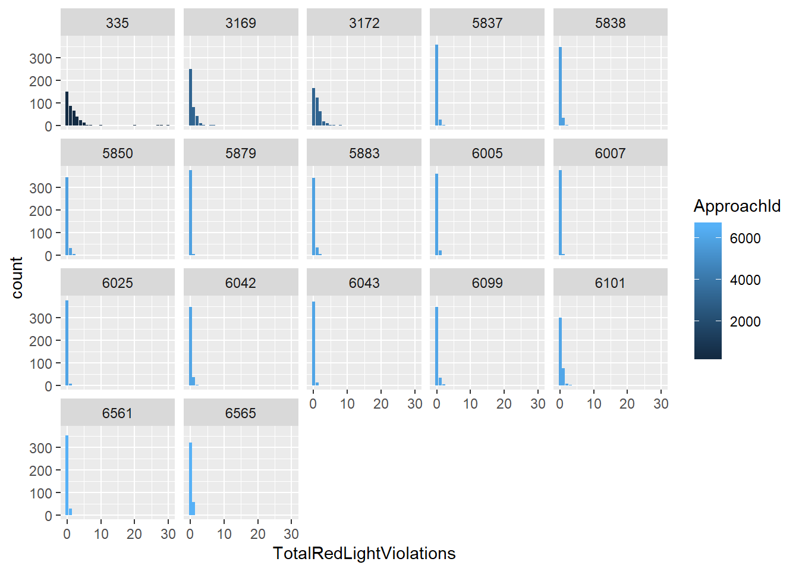
TotalVolume VS TotalRedLightViolations
ggplot(df6,aes(x = TotalVolume, y = TotalRedLightViolations)) +
geom_point(alpha = 0.2) +
scale_x_continuous(limits = c(0,1100))## Warning: Removed 1152 rows containing missing values (geom_point).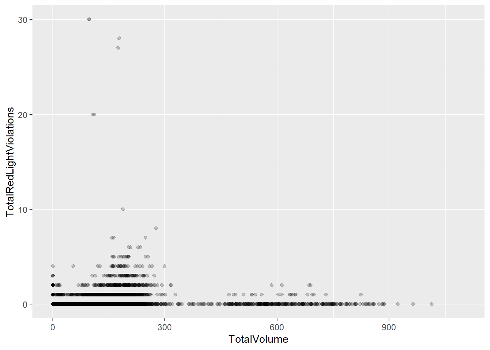
ggplot(df6,aes(x = TotalVolume, y = TotalRedLightViolations)) +
geom_point(alpha = 0.2) +
scale_x_continuous(limits = c(0,1100)) +
facet_wrap(~SignalID)## Warning: Removed 1152 rows containing missing values (geom_point).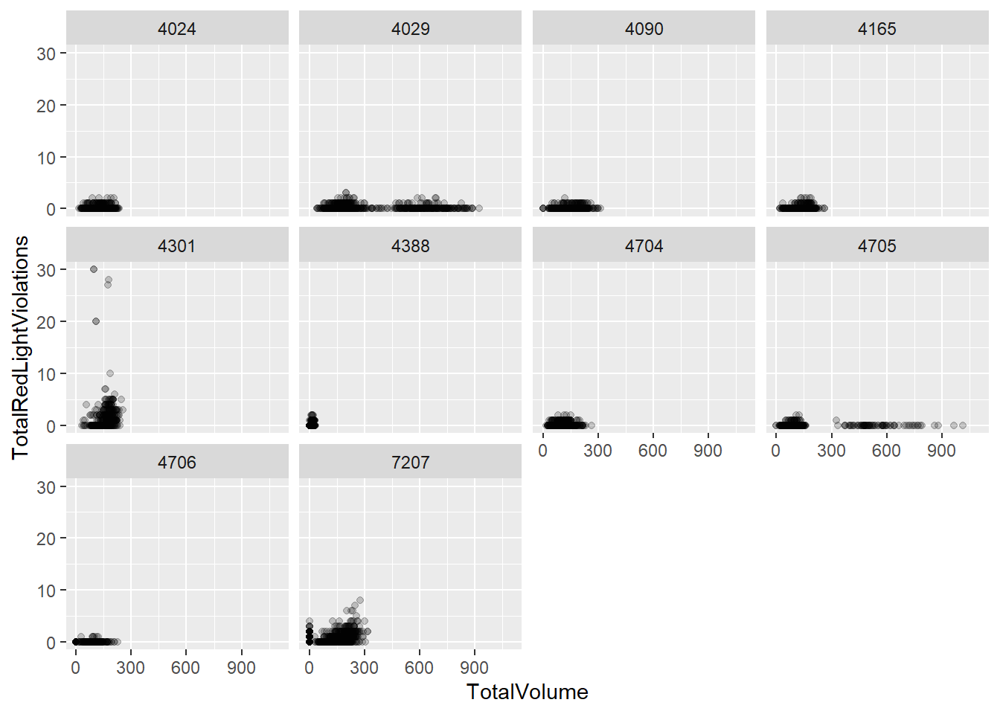
Thresholed plots TotalVolume VS variables
Plots
ForceOffs
ggplot(df6, aes(x = TotalVolume, y = ForceOffs)) +
geom_abline(slope = 30/200, intercept = 0, col = "red")+
geom_abline(slope = 30/400, intercept = -5, col = "red")+
geom_abline(slope = 30/600, intercept = -10, col = "red")+
geom_abline(slope = 30/800, intercept = -15, col = "red")+
geom_hline(yintercept = 0.5, col = "blue")+
geom_point(alpha = 0.2) ## Warning: Removed 3 rows containing missing values (geom_point).
GapOuts
ggplot(df6, aes(x = TotalVolume, y = GapOuts)) +
geom_abline(slope = 30/200, intercept = 0, col = "red")+
geom_abline(slope = 30/400, intercept = -5, col = "red")+
geom_abline(slope = 30/600, intercept = -10, col = "red")+
geom_abline(slope = 30/800, intercept = -15, col = "red")+
geom_hline(yintercept = 0.5, col = "blue")+
geom_point(alpha = 0.2)## Warning: Removed 3 rows containing missing values (geom_point).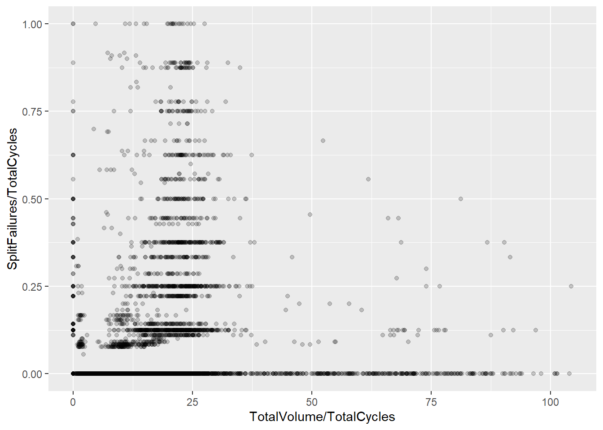
ArrivalsOnGreen
ggplot(df6, aes(x = TotalVolume, y = ArrivalsOnGreen)) +
geom_point(alpha = 0.2)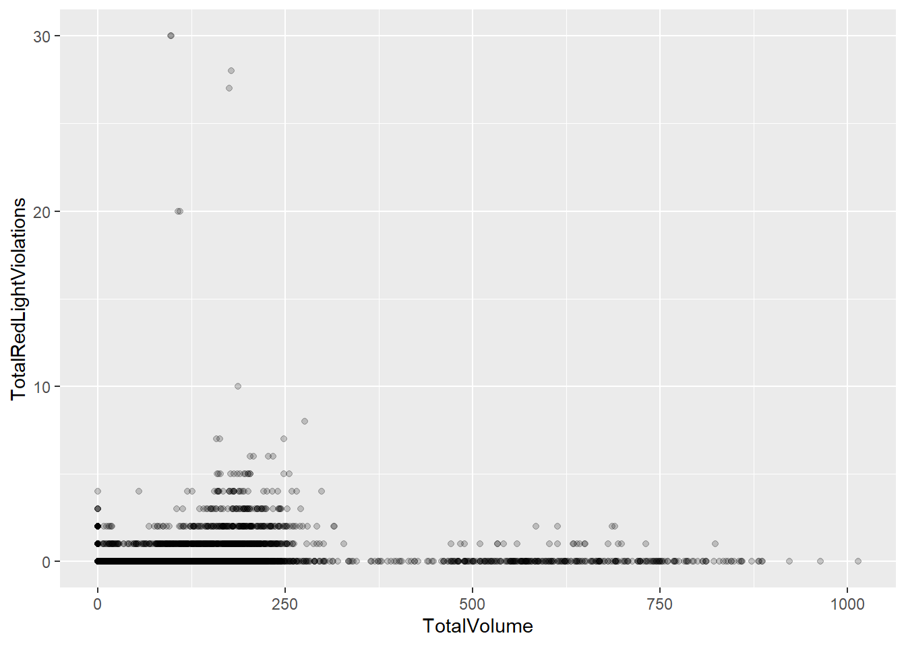
ArrivalsOnRed
ggplot(df6, aes(x = TotalVolume, y = ArrivalsOnRed)) +
geom_point(alpha = 0.2)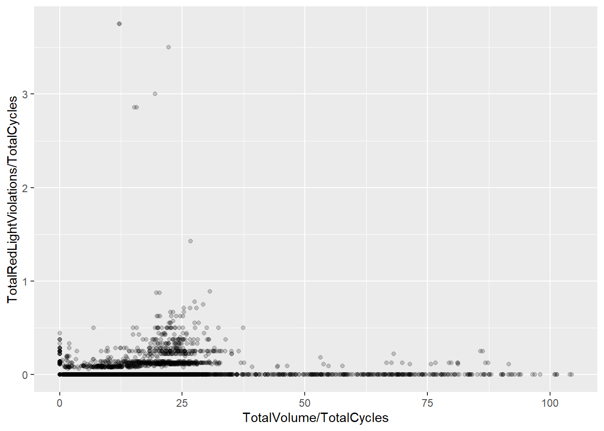
SplitFailures
ggplot(df6, aes(x = TotalVolume, y = SplitFailures)) +
geom_point(alpha = 0.2)## Warning: Removed 768 rows containing missing values (geom_point).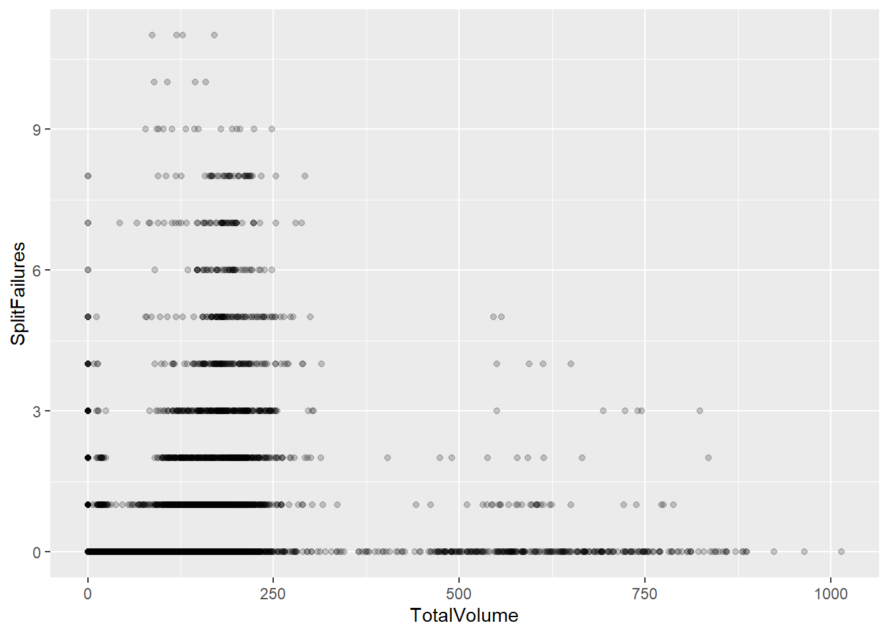
TotalRedLihtViolations
ggplot(df6, aes(x = TotalVolume, y = TotalRedLightViolations)) +
geom_point(alpha = 0.2)## Warning: Removed 1152 rows containing missing values (geom_point).